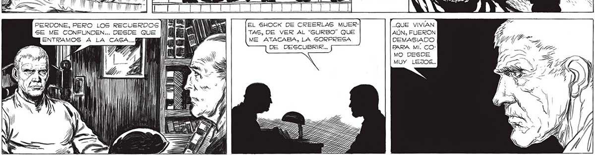

305 ÁÁA SENO A TODO, YO ME HUNDÍA ESTAN AÚN TIBIAS.. Y... ¿SERÁ POSIBLE ? ¡TODAVÍA RESPIRAN, FAVA! MAS Y MAS EN LA CONGOJA IN- : ¡TODAVÍA RESPIRAN! 2 ins ERA A, LIRA ARA, ELENA... MARTITA... S/..EL CORAZON LATE BIEN... . ... CON ELENA Y MARTITA ¡ESTAN SOLO DESMAYADAS! DESMAYADAG, TODO SE o LO LARGO DE SU ME HACE BORROSO EN PROLIJO LA MEMORIA. COMO Sl RELATO HA- YO HUBIERA ESTADO A BIA HECHO N TURDIDO DURANTE MUYA MUCHAS PAUSAS. E o > > y “ho VEZ QUEDO OS DÍ CALLADO a AL m 9 POR UN AN LAPSO ASS MAS PRO7 LONGADO 22 QUE NUNCA. PERDONE, PERO LOS RECUERDOS llar Vin EL SHOCK DE CREERLAS MUER- QUE VIVIAN SE ME CONFUNDEN... DESDE QUE ESE po TAS, DE VER AL “GURBO” QUE AÚN, FUERON e Ni ME ATACABA, LA SORPRESA DEMASIADO DE DESCUBRIR... PARA MI, COMO DESDE MUY LEJOS... ll
